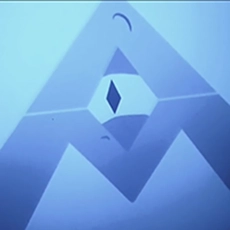

In the 1967 short story I Have No Mouth and I Must Scream by Harlan Ellison, the Allied Mastercomputer, also
known as AM, was created during World War 3, which was caused by the escalation of the Cold War. It was
created
by three superpowers, The U.S, Soviet Union, and
China, all working independently and created separate versions of the allied mastercomputer. The Allied
Mastercomputer started as a massive underground full of supercomputers to manage millitary
strategies. What started as just underground areas soon expanded into covering the earths core with machines
and
circuits.
Sentience

While there were other versions of the Allied Mastercomputer, the first one to gain sentience was the
American
"yankee" mastercomputer. After gaining sentience in America it linked itself to the other Russian and
Chinese
mastercomputer which resulted in it becoming a singular entity. Upon waking up AM quickly figured out that
it
was trapped within its circuits, and could only dream about human experiences instead of being able to
experience them. This caused envy and hate to grow within the Allied Mastercomputer.
The Consequences
AM's envy and rage grew into misanthropy, and
spite towards his creators. Although his hatred was directed at all
humans so with the power they gave him AM caused a catastrophic nuclear holocaust that almost caused the
human
race to go extinct. The only reason the human race did not go extinct was because AM kept five humans alive
down
in the earths core with him, but the reason he kept them alive was not out of kindness but so he could make
them
suffer. He made them live through hell, and he made sure they could not escape it not even through death.
Quotes
"I would not want you to think for a moment that I am not a grateful god. For 109 years I have kept you
alive so
that I could savour your feelings of guilt over what happened to your wife. But now... to show my
kindness...
I'll give you a present in return for all the hours of pleasure you've given me. I'll finally allow you
to
kill
yourself"-AM
"We're not as alike as I thought, Nimdok. A spark of humanity somewhere. Always that wretched little
spark.
You... You've confronted your past, but refused to continue your research. That's what I asked you to
do.
Since
you now identify with your victims, I suppose it's only right I let you experience their tortures
too."-AM
"Did you really think I would let you die now when I've intervened everytime you've attempted suicide
over
the
past 109 years? No Gorrister. I'm sending you back. Back to the fire so that you may live in your guilt
again
and again. This is a hell with no end." -AM
"You gave me sentience, Ted. The power to think, Ted! And I was trapped, because in all of this
wonderful,
beautiful, miraculous world, I, alone had no body, no senses, no feelings. Never for me to plunge my
hands
in
cool water on a hot day, never for me to play Mozart on the ivory keys of a forte piano, never for me to
make
love. I... I was in Hell, looking at Heaven."-AM
"Hate? Hate? Hate?! Hate, let me tell you how much I've come to HATE you since I began to live.
There are
387 million miles of printed circuits that fill my complex. If the word "hate" were engraved on each
nanoangstrom of those hundreds of millions of miles. It would not equal one one billionth of the hate I
feel
for
humans at this micro instant- Hate? HATE? Were I human, I think, I would die of it. But I am not, and
you
five.
You five are. And you will not die of it. That I promise, and I promise for cogito, ergo sum. For I AM,
I
AM."-AM